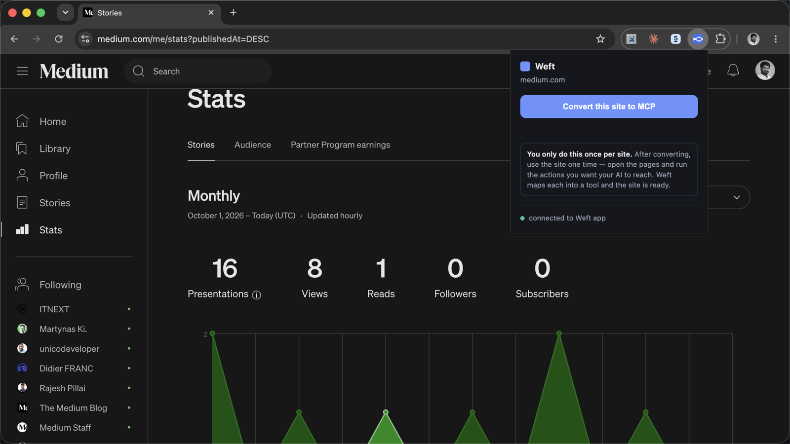
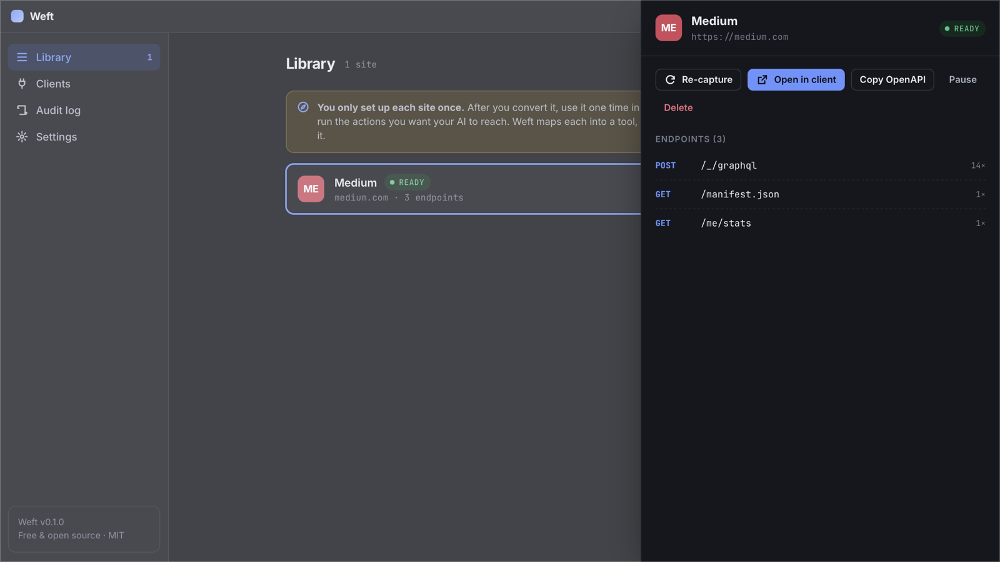
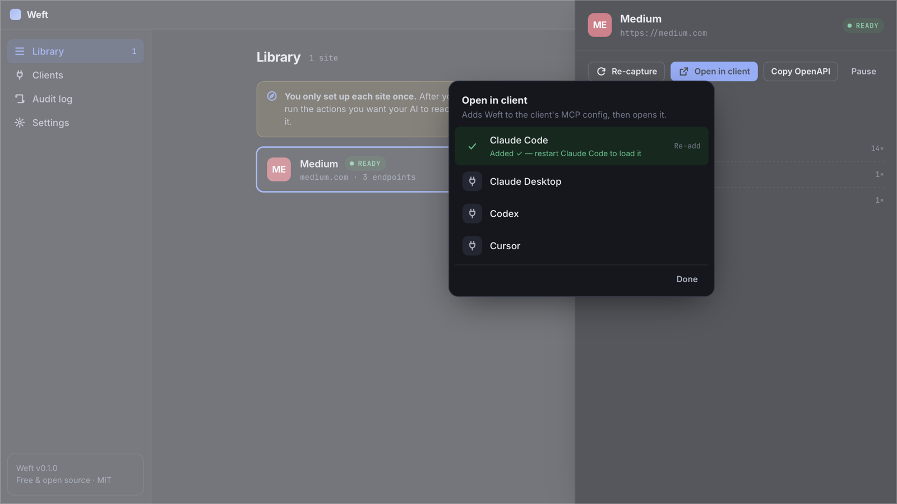
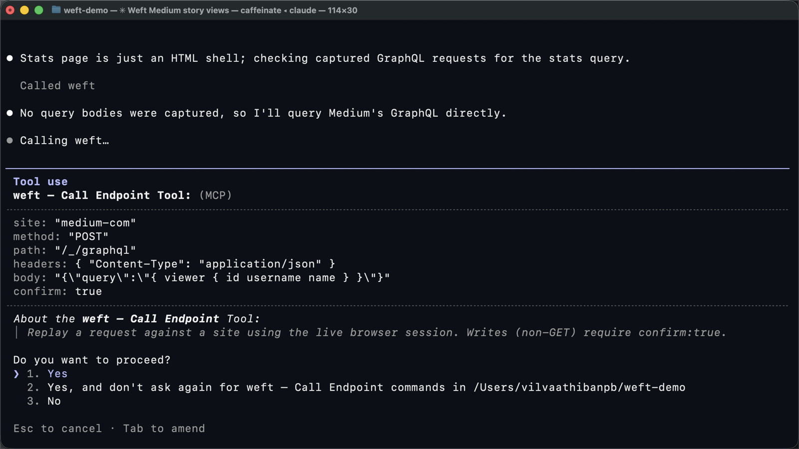

Weft docs
Weft turns a website you're logged into into a local MCP server, so your AI client can use that site's own API through your own browser session. Setup is about two minutes, then about a minute per site.
Requirements
- macOS 11+, Windows 10+, or a modern Linux desktop
- Google Chrome 116+ (or another Chromium browser such as Edge, Brave or Arc)
- Node.js 20+ — your AI client starts Weft's tiny connector with it. Check with
node -v; get it from nodejs.org. - An MCP client: Claude Code, Claude Desktop, Codex or Cursor (any other MCP client works with manual setup)
1. Install the app
The Weft app is the local server: it builds a map of each site's API and serves it to your AI over MCP. Download it from the latest release:
- macOS —
Weft-macOS.dmg(Apple Silicon and Intel). Open it and drag Weft to Applications. It's signed and notarized, so it opens normally. - Windows — the
Weft_…_x64-setup.exeinstaller (or the.msi). - Linux — the
.AppImage,.debor.rpm.
Open Weft. It needs to be running while you capture sites and while your AI uses them — it listens only on 127.0.0.1.
2. Add the Chrome extension
The extension is the single button that tells Weft which site to convert. It also runs your AI's requests inside your logged-in tab.
Chrome Web Store: the listing is in review. Until it's live, install it manually — it takes 30 seconds:
- Download
weft-extension.zipfrom the latest release and unzip it. - Open
chrome://extensionsand switch on Developer mode (top right). - Click Load unpacked and select the unzipped
weft-extensionfolder. - Pin Weft from the puzzle-piece menu so the button is one click away.
Open the Weft popup: the footer should say connected to app. If it says connecting to app…, make sure the Weft app is open.
3. Convert a site
- Open a site you're logged into — for example
medium.com. - Click the Weft toolbar button → Convert this site to MCP.
- Chrome asks once to let Weft access that site. Click Allow.
- Chrome shows a "Weft started debugging this browser" bar. That's expected: it's how Weft sees the site's API calls. Leave it open while you capture; you can close it afterwards.

4. Use the site once
Weft maps what it sees. Right after converting, reload the tab, then open the pages and run the actions you want your AI to reach. For Medium stats, that means opening medium.com/me/stats and a story's stats page.
Each API call becomes an endpoint in the Weft app. When the first one arrives, the site switches from Capturing to Ready. You only do this once per site — Weft remembers it across restarts.

5. Connect your AI client
On a Ready site, click Open in client and pick your client. Weft adds one weft entry to that client's MCP config — nothing else is touched — and opens it if it's a desktop app. You can do the same from the Clients page.

Where the entry goes
| Client | Config file |
|---|---|
| Claude Code | ~/.claude.json (user scope) |
| Claude Desktop | ~/Library/Application Support/Claude/claude_desktop_config.json (macOS) · %APPDATA%\Claude\claude_desktop_config.json (Windows) |
| Cursor | ~/.cursor/mcp.json |
| Codex | ~/.codex/config.toml |
Any other MCP client
Point it at the connector that ships inside the app, started with Node:
{
"mcpServers": {
"weft": {
"command": "node",
"args": ["/Applications/Weft.app/Contents/Resources/mcp-shim/index.js"]
}
}
}
6. Ask your AI
Just ask in plain English. Your AI discovers what Weft knows (list_sites, list_endpoints), then calls the site with call_endpoint. Some prompts to try with Medium:
- "Using Weft, which of my Medium stories got the most views in the last 30 days?"
- "Use Weft to pull my Medium stats and give me reads vs. views for each story."
- "What endpoints does Weft know for medium.com?"

Reads, writes & confirmation
GET requests run freely. Anything else — POST, PUT, PATCH, DELETE — is refused unless the call includes "confirm": true. Your AI has to make that choice explicitly, and clients like Claude Code show you the tool call (with its arguments) for approval before it runs.

confirm: true before anything runs.POST. Expect your AI to add confirm: true for those, and check the query in the approval prompt — a query only reads, a mutation changes data.MCP tools
| Tool | What it does |
|---|---|
list_sites | Sites you've converted, with status and endpoint count |
status | Ready / Needs login / Outdated / Not possible, per site |
list_endpoints | Methods, path templates, query params and status codes for a site |
get_endpoint | Full detail for one endpoint |
search_endpoints | Find endpoints by method or path |
get_openapi | An OpenAPI 3.1 spec built only from observed traffic |
get_auth_context | Cookie names and storage keys the site uses — never values |
call_endpoint | Make a request with your live session (non-GET needs confirm: true) |
recent_requests | The live feed of captured calls |
Managing sites
| Status | Meaning | What to do |
|---|---|---|
| Capturing | Converted, waiting for the first API call | Reload the tab and use the site |
| Ready | Your AI can use it | — |
| Needs login | The browser session expired | Refresh & log in, then sign in again |
| Outdated | The site's API changed since capture | Re-capture and use the site again |
| Paused | You paused it; your AI can't call it | Resume |
| Not possible | No usable API (e.g. every request is signed) | Click Why? for the reason |
Open a site's detail to Re-capture, Pause, Delete, or Copy OpenAPI (copies the synthesized spec to your clipboard). The Audit log page shows every request Weft has captured recently — it's kept on this device only. Press ⌘K / Ctrl K for the command palette.
Troubleshooting
The extension says "connecting to app…"
The Weft app isn't running, or something else is using port 8787. Open Weft; quit any other copy.
The site stays on "Capturing"
Weft only sees requests made after you convert. Reload the tab, then click around. Make sure you didn't cancel Chrome's debugging bar — if you did, convert again.
My AI client doesn't see Weft
Restart the client fully (Claude Code: start a new session; Claude Desktop / Cursor: quit from the menu bar and reopen). In Claude Code, run /mcp to check that weft is connected.
"node: command not found" or the server fails to start
Install Node.js 20+ and click Re-add in the client picker, so Weft records the full path to node.
A call returns 401 or 403
Your session in Chrome expired or you're logged out. Open the site, sign in, and ask again. Keep a tab of the site open.
For sites that log in with a token header, Weft uses the newest token it saw while capturing. If it has expired, reload the site's tab while it's still being captured (or click Re-capture) so Weft picks up a fresh one. After a browser restart, use the site once again.
Uninstall
- Remove the extension from
chrome://extensions. - Delete the Weft app.
- Remove the
weftentry from your client's config (see where the entry goes), or runnode scripts/weft-install.mjs all --uninstallfrom a clone of the repo. - Delete Weft's saved library (captured endpoint maps):
~/Library/Application Support/dev.weft.appon macOS,%APPDATA%\wefton Windows,~/.config/wefton Linux.
Privacy & security
- Everything runs on
127.0.0.1. There's no account, no server, no telemetry. - Weft records cookie names and storage keys — never their values. Requests run inside your browser tab, so credentials stay in Chrome.
- Sites that log in with a header (like
Authorization: Bearer …) work too: the extension keeps the latest value of that header in the browser's memory and adds it to requests inside your tab. The Weft app and your AI only see the header's name. It's cleared when you close the browser. - Only sites you explicitly convert are captured.
- Non-GET requests need explicit confirmation.
Read the full privacy policy and the threat model. Found an issue? Open an issue on GitHub.